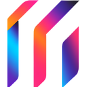
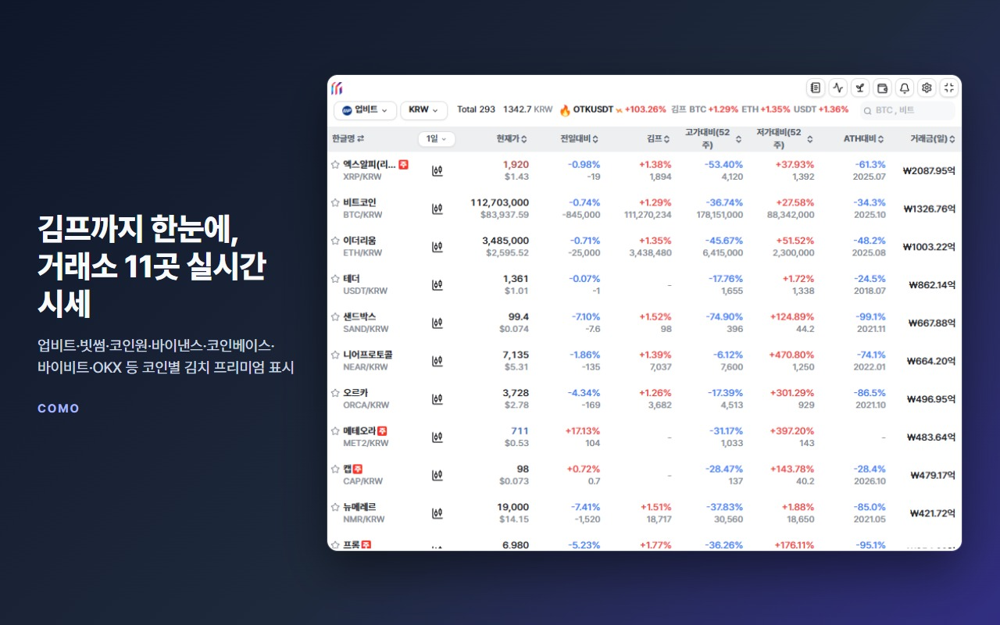
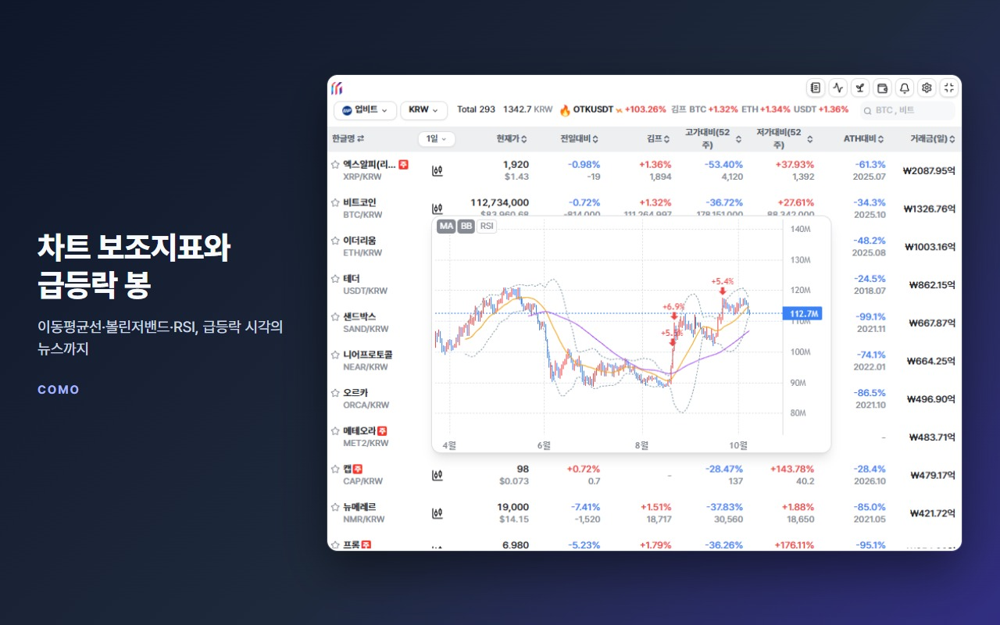
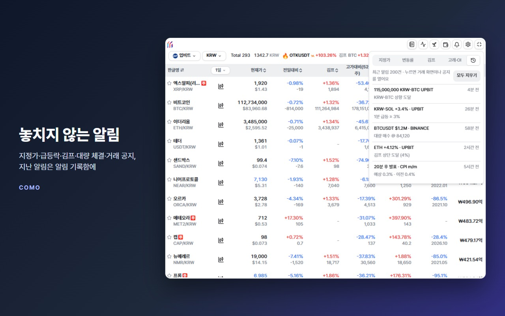
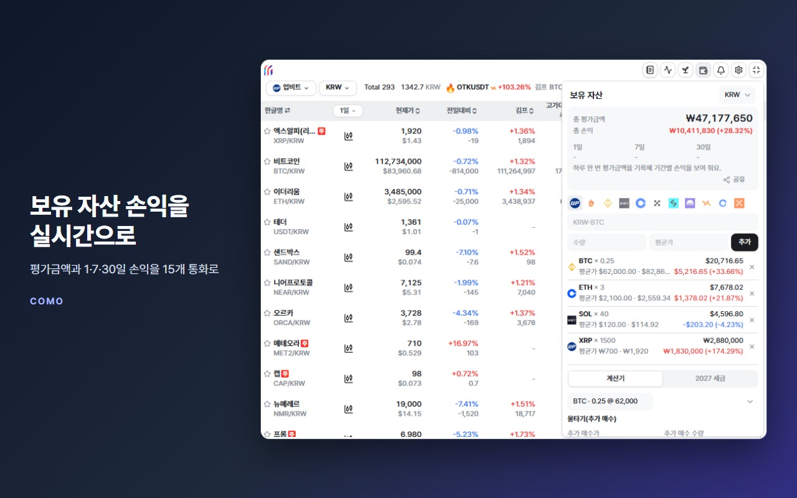
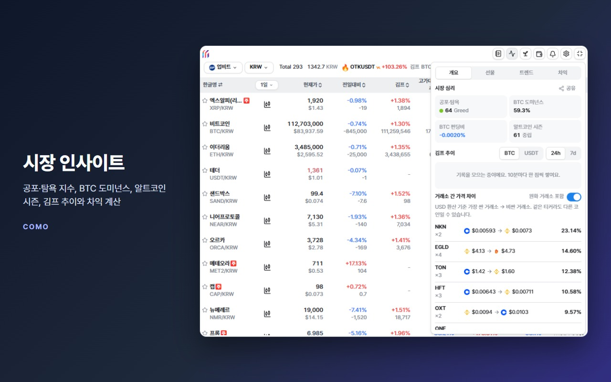

김프까지 한눈에
업비트·빗썸·코인원·디지털엑스와 바이낸스·코인베이스·바이비트·OKX·비트겟·크라켄·CoinDCX 시세를 실시간으로. 원화 마켓은 코인마다 김치 프리미엄을 함께 보여 줘요.

COMOEnglish업비트·빗썸·바이낸스 등 거래소 11곳의 시세와 코인별 김치 프리미엄, 지정가·급등락 알림을 한 화면에서. 무료이고 회원가입도 필요 없어요.

업비트·빗썸·코인원·디지털엑스와 바이낸스·코인베이스·바이비트·OKX·비트겟·크라켄·CoinDCX 시세를 실시간으로. 원화 마켓은 코인마다 김치 프리미엄을 함께 보여 줘요.
이동평균선·볼린저밴드·RSI를 켜고, 크게 움직인 봉에 마우스를 올리면 그 시각 뉴스를 보여 줘요.

지정가, 1·5·15분 급등락, 김프, 대량 체결, 선물 미결제약정, 거래 공지, 경제 일정 알림. 방해 금지 시간과 알림 기록함까지.

코인·수량·평균가만 넣으면 평가금액과 1·7·30일 손익을 15개 통화로. 물타기·손익분기 계산기, 2027 과세 미리보기도 있어요.

공포·탐욕 지수, BTC 도미넌스, 알트코인 시즌, 김프 추이, 수수료까지 넣은 김프 차익 계산기, 펀딩비·청산·롱숏 비율.

거래소의 공개 시세 API만 조회하고, 방문하는 웹페이지는 읽지 않아요. 설정·알림·보유 자산은 브라우저에만 저장돼요. 거래소 계정 연동은 선택이며 읽기 전용 키만 받아요.